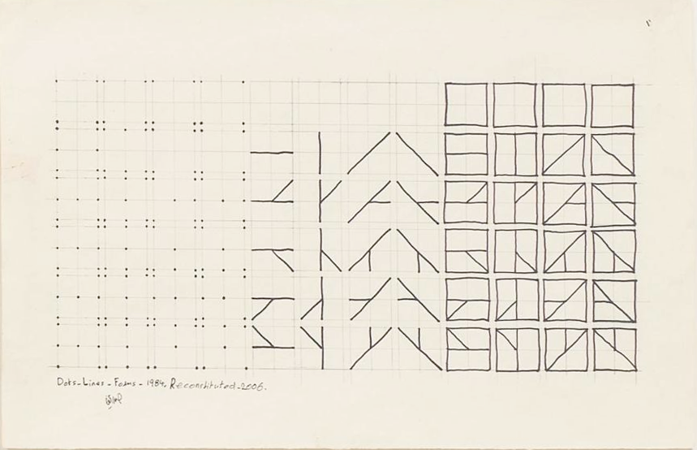

Recreating the Past
Hassan Sharif

The first image is a picture of Dots, Lines and Forms by Hassan Sharif (1984). Below is my recreation of the image using p5.js.
As I was making sense of the image, I mentally divided it into a triptych - three grids each with four squares across (numColumns) and six squares down (numRows). These squares are 2x2 grids in themselves, hence a width of 2. Each of the squares is 26 points across giving it a scale of 26. Finally, each of these 2x2 grids is separated by 8 points - the distanceBetween.
In each of these 2x2 grids, there are 9 points created by the intersection of the gridlines. Starting with index zero, I called the top left point[0] and the bottom right point[8]. Using this system I described the points and lines that exist in each square. For example, in the first row of the panel with dots, there are points at point[0], point[2], point[6], and point[8]. Going from left to right across the second row of the middle panel, there are lines drawn from point[3] to point[5], point[1] to point[7], point[2] to point[6], and point[0] to point[8]. The dots drawn in the first panel are connected in the second panel, and the third panel merely adds an outline to the 2x2 grid on top of the lines of the second panel. It was interesting to notice that though I sensed the patterns at play, it was not so straightforward to turn that understanding into a coded system.
Lastly, I included a variable randomness which adds a bit of random distance to the start and end points of the drawn lines. Its impact is less obvious at a scale of 26 than it would be at, say, a scale of 50. In future iterations, I'm interested in adding some squigglyness to the lines.